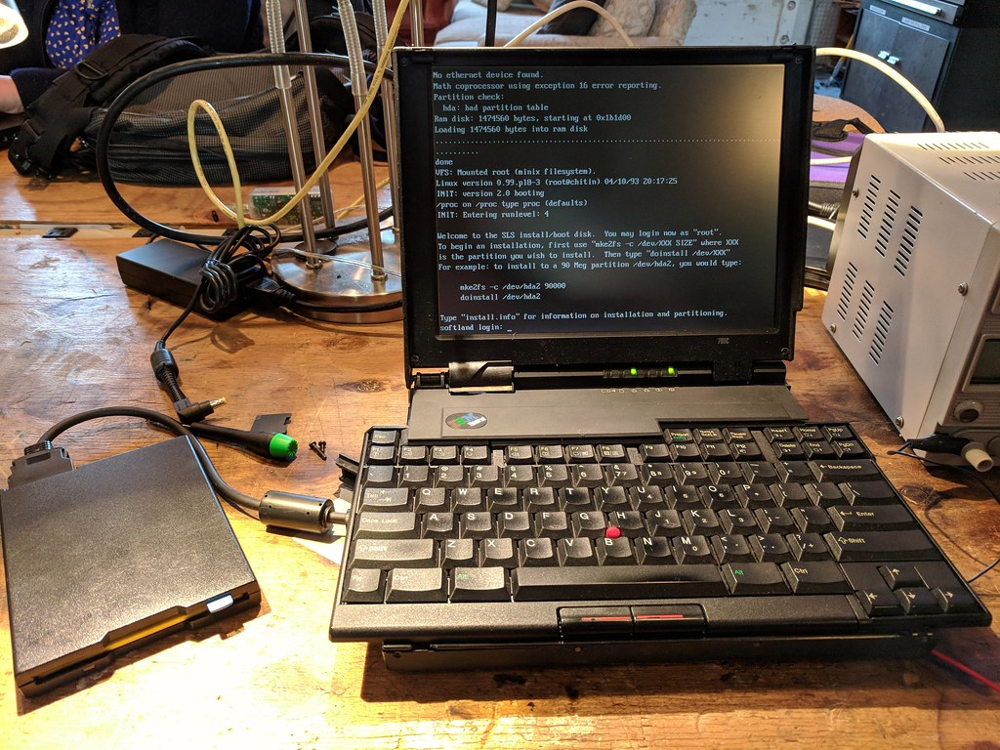

safeboot: Booting Linux Safely
Goals
safeboot has five goals to improve the safety of booting Linux
on normal laptops:
- Booting only code that is authorized by the system owner (by installing a hardware protected platform key for the kernel and initrd)
- Streamlining the encrypted disk boot process (by storing keys in the TPM, and only unsealing them if the firmware and configuration is unmodified)
- Reducing the attack surface (by enabling Linux kernel features to enable hardware protection features and to de-privilege the root account)
- Protecting the runtime system integrity (by optionally booting from a read-only root with dmverity and signed root hash)
- Proving to remote systems that the local machine is safe (using a remote attestation protocol built with the TPM2)
The threat model page has more detail about the firmware, kernel, and runtime changes, as well as how they help achieve these goals and the threats that they help protect against.
Why safeboot?
The slightly more secure Heads firmware is a better choice for user freedom since it replaces the proprietary firmware with open source. However, Heads and LinuxBoot only support a limited number of mainboards and systems, while safeboot's objective is to work with existing commodity hardware and UEFI SecureBoot mechanisms, as well as relatively stock Linux distributions.
The problem is that configuring all of the pieces for UEFI Secure Boot, generating keys in hardware tokens, signing kernels, and integrating LUKS disk encryption with the TPM is very complex. There are numerous guides that walk through individual pieces of this process, but most of them are very fine-grained and require far too many steps to complete.
Likewise the tpm2-tools package has all of the low-level API calls for
interacting with the TPM and the various endorsement and attestation keys,
but no easy way to generate signed quotes and perform remote attestation.
Like they say in the informercials: "there has to be a better way!"
End users and administrators need a tool that wraps up all of the complexity into the few operations that they need from day to day: signing new kernels, decrypting their disks at boot, protecting the system from runtime attackers, attesting to the integrity of their systems, etc.
safeboot and tpm2-attest are (early versions of) those tools!
Links
- Installation Instructions for configuring
safeboot - Threat Model that
safebootis trying to protect against - Frequently Asked Questions about
safeboot - TPM2 Remote Attestation protocol for accessing network resources
- Chain of Trust for booting a modern x86 CPU
- Source code
safebootsubcommandstpm2-attestsubcommands
Status